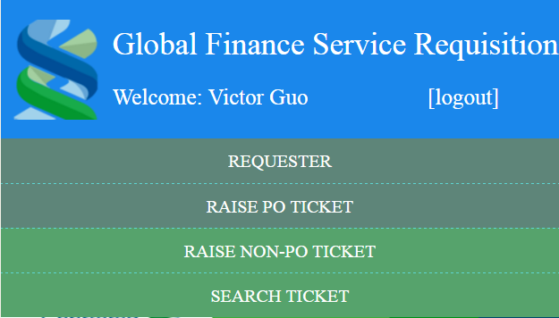

Login by Requestor(1464202), then click "RAISE PO TICKET" Menu.

You will see below picture.
In future, the most of value will be fetched from PO / BRCC system automatically. But in demo, we need to manually input.
The system will auto-generate a barcode for unique ticket identity. So far user needs to auto-print this barcode and paste in printing paper.
Click "SUBMIT" button to save and submit this ticket.